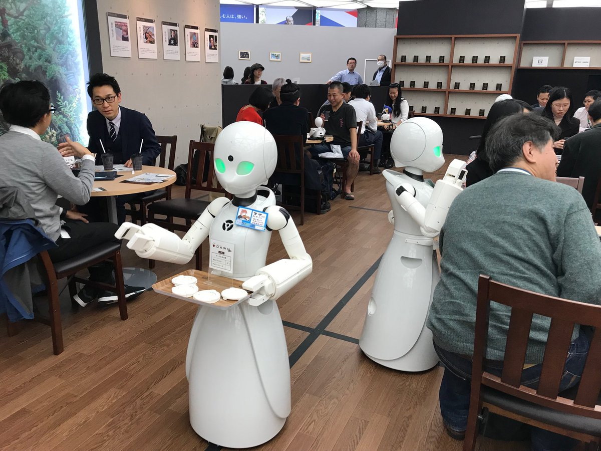

Besides the amazing advantages of artificial intelligence, it also has disadvantages, including:
Disadvantages of Artificial Intelligence
High Costs
The ability to create a machine that can simulate human intelligence is no small feat. It requires plenty
of time and resources and can cost a huge deal of money. AI also needs to operate on the latest hardware and software to stay updated and meet the latest
requirements, thus making it quite costly.
No creativity
A big disadvantage of AI is that it cannot learn to think outside the box. AI is capable of learning over
time with pre-fed data and past experiences, but cannot be creative in its approach. A classic example
is the bot Quill who can write Forbes earning reports. These reports only contain data and facts already
provided to the bot. Although it is impressive that a bot can write an article on its own, it lacks the human
touch present in other Forbes articles.
Increase in Unemployment
Perhaps one of the biggest disadvantages of artificial intelligence is that AI is slowly replacing a
number of repetitive tasks with bots. The reduction in the need for human interference has resulted in
the death of many job opportunities. A simple example is the chatbot which is a big advantage to
organizations, but a nightmare for employees. A study by McKinsey predicts that AI will replace at least 30 percent of human labour by 2030.

This is a picture showing the replacement of waiters in a cafe with a robots
Make Humans Lazy
AI applications automate the majority of tedious and repetitive tasks. Since we do not have to
memorize things or solve puzzles to get the job done, we tend to use our brains less and less. This
addiction to AI can cause problems to future generations.
No Ethics
Ethics and morality are important human features that can be difficult to incorporate into an AI. The
rapid progress of AI has raised a number of concerns that one day, AI will grow uncontrollably, and
eventually wipe out humanity. This moment is referred to as the AI singularity.
Other things
Machines can easily lead to destruction if the implementation of machine put in the wrong hands the results
are hazardous for human beings.In addition to The difficulties with software development for AI implementation are that the development of software
is slow and expensive. Few efficient programmers are available to develop software to implement artificial intelligence.
There are many media that explain the development of artificial intelligence